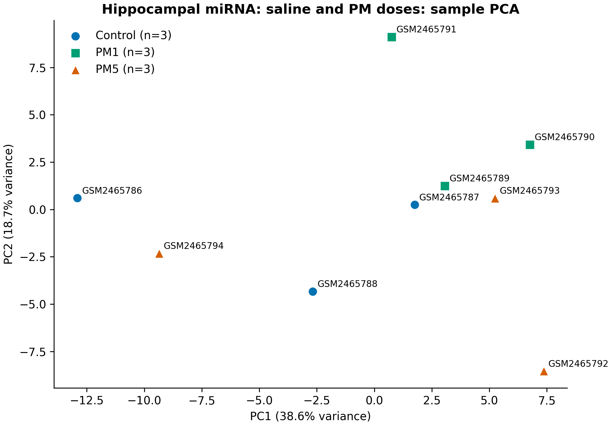
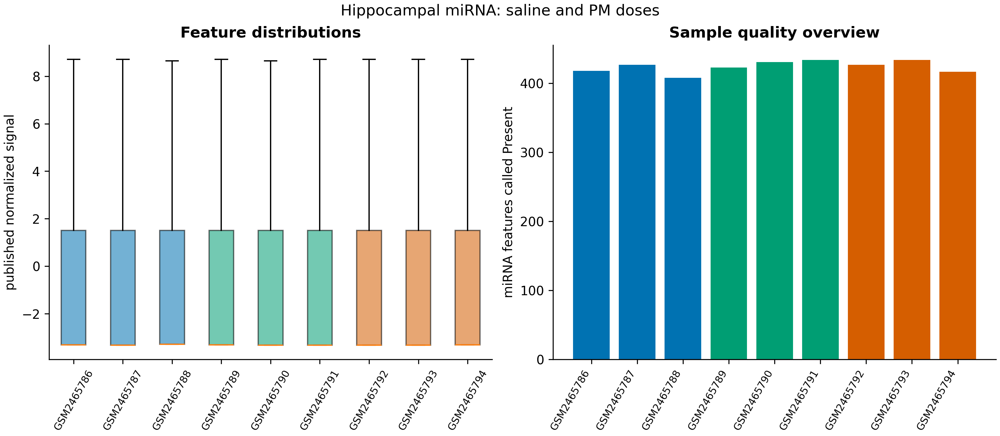
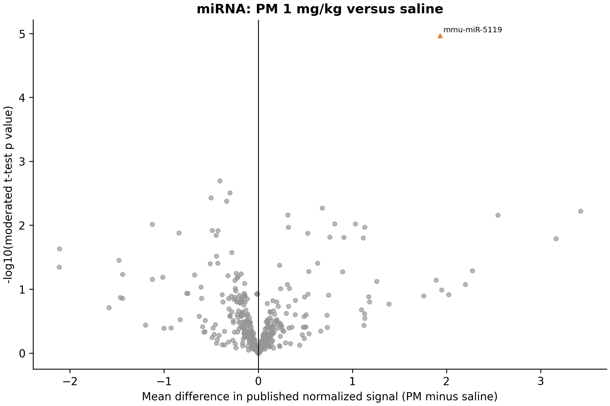
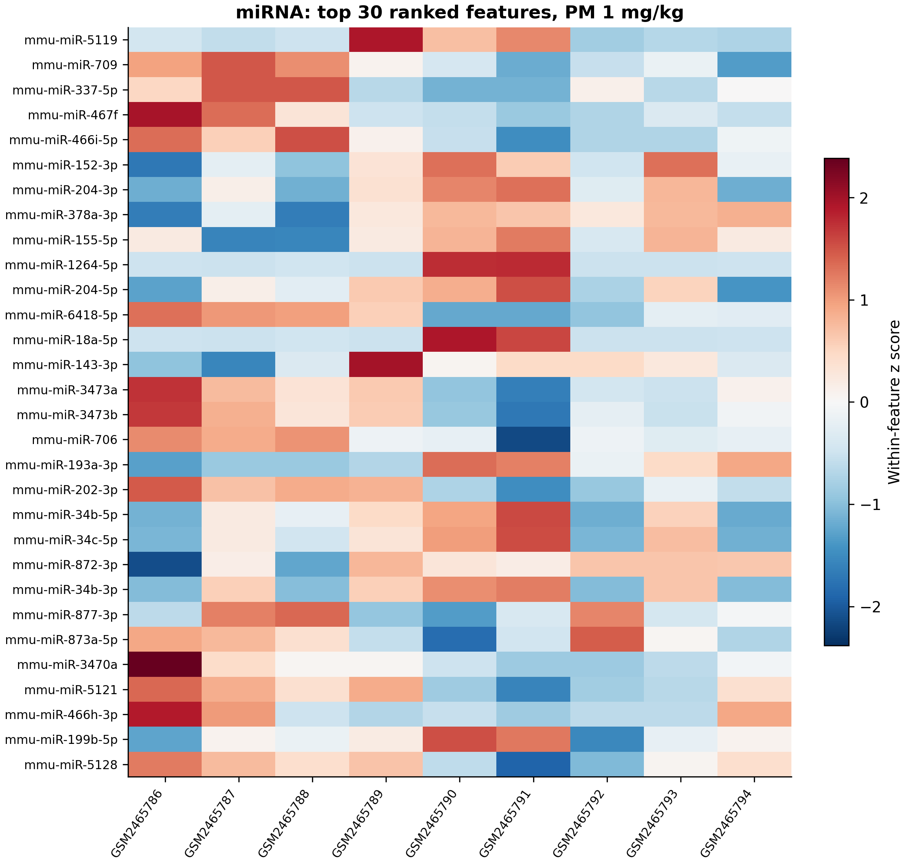
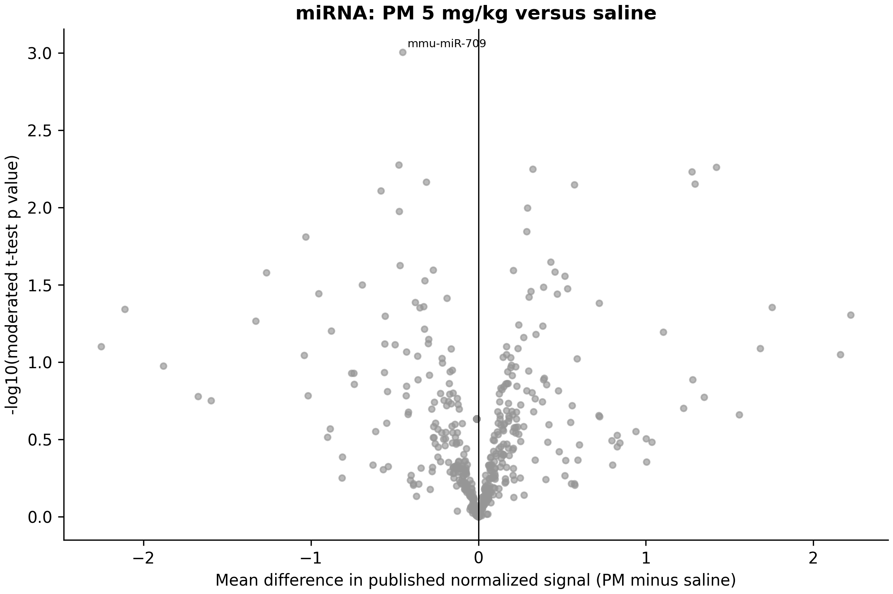
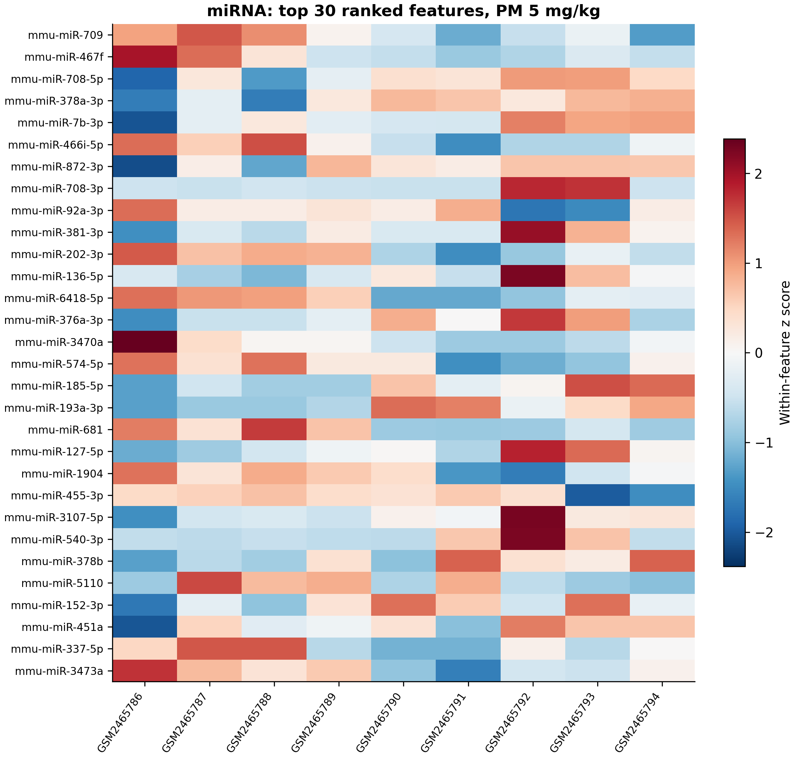

| Muestra | Título de la muestra original | Grupo | Dosis (mg/kg) |
|---|---|---|---|
| GSM2465786 | Hippocampus_control_rep1 | Control | 0 |
| GSM2465787 | Hippocampus_control_rep2 | Control | 0 |
| GSM2465788 | Hippocampus_control_rep3 | Control | 0 |
| GSM2465789 | Hippocampus_PM2.5_1 mg/kg_rep1 | PM1 | 1 |
| GSM2465790 | Hippocampus_PM2.5_1 mg/kg_rep2 | PM1 | 1 |
| GSM2465791 | Hippocampus-PM2.5_1 mg/kg_rep3 | PM1 | 1 |
| GSM2465792 | Hippocampus-PM2.5_5 mg/kg_rep1 | PM5 | 5 |
| GSM2465793 | Hippocampus-PM2.5_5 mg/kg_rep2 | PM5 | 5 |
| GSM2465794 | Hippocampus-PM2.5_5 mg/kg_rep3 | PM5 | 5 |
miRNA del hipocampo: dos dosis de PM
Pregunta del estudio
GSE93967 mide señales de miRNA del hipocampo después de administrar solución salina o PM2.5 por aspiración orofaríngea a 1 o 5 mg/kg, en días alternos durante cuatro semanas. El experimento de microarreglos depositado contiene nueve muestras biológicas: tres por grupo. El artículo original se centró en miR-574-5p y en experimentos funcionales adicionales; este informe vuelve a analizar la matriz depositada de microarreglos y no reproduce esos experimentos adicionales. (Ku et al. 2017)
Materiales y métodos
Datos de entrada, anotación y escala de medición
La matriz de la serie GEO contiene 1,268 filas de características. La tabla de la plataforma GPL17912 vincula las sondas biológicas de miRNA de ratón con las etiquetas miRNA_ID proporcionadas. Se conservan los identificadores históricos de la plataforma sin una actualización o agregación silenciosa de miRBase. Veintiuna filas de control o sin anotación se conservan en la exportación original, pero se excluyen del análisis diferencial. Dos filas biológicas de miRNA, mmu-miR-3963 y mmu-miR-6366, tienen varianza cero entre las nueve muestras y también se excluyen.
GEO describe una normalización por cuantiles con GeneSpring, pero no establece explícitamente que la matriz depositada esté medida en escala log2. Los datos suministrados incluyen valores negativos y una gran acumulación en el límite inferior. El análisis no aplica una segunda transformación logarítmica ni un modelo para datos de conteo. Los efectos se expresan como diferencias de medias en unidades de señal normalizada publicada; los valores positivos indican mayor señal en el grupo PM. No se interpretan como cambios log2 de expresión ni se convierten en cambios multiplicativos.
Modelo estadístico e indicadores de detección
Limma ajusta un modelo lineal de tres grupos con un coeficiente de media de grupo para solución salina, PM a 1 mg/kg y PM a 5 mg/kg. Los dos contrastes planificados comparan cada grupo PM con solución salina. La moderación bayesiana empírica utiliza trend=True y robust=False; la prueba ómnibus opcional es una prueba F moderada de dos coeficientes para los dos contrastes PM menos solución salina. (Ritchie et al. 2015)
El ajuste de Benjamini–Hochberg se aplica a las filas de miRNA retenidas dentro de cada contraste por pares, y de forma separada en la prueba ómnibus. Estos ajustes no garantizan una única FDR conjunta para las tres familias de pruebas. Los errores estándar exportados y los intervalos t moderados puntuales del 95% se refieren a las diferencias de señal informadas; los intervalos no son simultáneos ni están ajustados por multiplicidad. (Benjamini y Hochberg 1995)
Se conservan las clasificaciones originales de detección de Agilent. Un indicador de baja detección identifica las filas con menos de tres clasificaciones Present en cada grupo. Estas filas permanecen en la familia principal de pruebas y su indicador queda disponible para la interpretación. No se elimina ninguna muestra biológica por el PCA. El PCA utiliza las 500 características retenidas más variables, centradas sin escalar su varianza, en la escala de señal depositada.
Resultados
Calidad y limitaciones de la señal
El modelo incluye 1,245 características biológicas de miRNA. De ellas, 823 reciben el indicador de baja detección. Entre las características retenidas y las nueve muestras se conservan 7,722 valores negativos de señal. El límite inferior específico de cada muestra, próximo a −3.3, domina la parte baja de la distribución de señal y limita la información disponible para muchas características.
PC1 y PC2 explican 38.6% y 18.7% de la varianza de los datos de entrada del PCA. Los tres grupos de exposición no se separan claramente en esta visualización. La falta de separación clara en el PCA no demuestra equivalencia; las nueve muestras se mantienen en todos los modelos.
| Muestra | Grupo | Señal mínima | Mediana de señal | miRNA detectados | miRNA no detectados | Características en el mínimo de la muestra |
|---|---|---|---|---|---|---|
| GSM2465786 | Control | -3.31 | -3.31 | 418 | 827 | 827 |
| GSM2465787 | Control | -3.32 | -3.32 | 427 | 818 | 818 |
| GSM2465788 | Control | -3.29 | -3.29 | 408 | 837 | 837 |
| GSM2465789 | PM1 | -3.31 | -3.31 | 423 | 822 | 822 |
| GSM2465790 | PM1 | -3.32 | -3.32 | 431 | 814 | 814 |
| GSM2465791 | PM1 | -3.32 | -3.32 | 434 | 811 | 811 |
| GSM2465792 | PM5 | -3.32 | -3.32 | 427 | 818 | 818 |
| GSM2465793 | PM5 | -3.32 | -3.32 | 434 | 811 | 811 |
| GSM2465794 | PM5 | -3.31 | -3.31 | 417 | 828 | 828 |




Contrastes de exposición
A 1 mg/kg, 1 característica cumple FDR < 0.05. A 5 mg/kg, 0 características cumplen ese umbral. La prueba F moderada ómnibus, ajustada por separado, identifica 1 característica. La ausencia de un hallazgo con FDR significativa a la dosis mayor no demuestra ausencia de efecto ni una dosis de exposición segura.
| Contraste | n control | n expuestos | Características analizadas | Características con FDR < 0.05 | Aumentadas con FDR < 0.05 | Disminuidas con FDR < 0.05 | Hallazgos con detección baja | Unidades del efecto |
|---|---|---|---|---|---|---|---|---|
| PM1_vs_Control | 3 | 3 | 1245 | 1 | 1 | 0 | 0 | mean difference in published normalized signal |
| PM5_vs_Control | 3 | 3 | 1245 | 0 | 0 | 0 | 0 | mean difference in published normalized signal |
El resultado con FDR significativa de la dosis menor es mmu-miR-5119: diferencia de medias 1.932 unidades de señal publicada, intervalo puntual del 95% 1.364 a 2.499, p ajustado = 0.013. Esta característica no está marcada por baja detección. Su señal a la dosis menor no demuestra por sí sola una respuesta monótona a la dosis.
| miRNA | Diferencia media (unidades de señal) | Error estándar moderado | Límite inferior del IC del 95% | Límite superior del IC del 95% | p nominal | FDR de BH | Indicador de detección baja |
|---|---|---|---|---|---|---|---|
| mmu-miR-5119 | 1.93 | 0.259 | 1.36 | 2.5 | 1.08e-05 | 0.013 | No |
| mmu-miR-709 | -0.41 | 0.103 | -0.635 | -0.184 | 2.02e-03 | 0.173 | No |
| mmu-miR-337-5p | -0.301 | 0.08 | -0.477 | -0.125 | 3.10e-03 | 0.173 | No |
| mmu-miR-467f | -0.503 | 0.138 | -0.806 | -0.2 | 3.73e-03 | 0.173 | No |
| mmu-miR-466i-5p | -0.337 | 0.094 | -0.545 | -0.13 | 4.21e-03 | 0.173 | No |
| mmu-miR-152-3p | 0.68 | 0.198 | 0.246 | 1.11 | 5.34e-03 | 0.173 | No |
| mmu-miR-204-3p | 3.43 | 1.02 | 1.2 | 5.66 | 6.02e-03 | 0.173 | No |
| mmu-miR-378a-3p | 0.313 | 0.095 | 0.105 | 0.522 | 6.93e-03 | 0.173 | No |
| mmu-miR-155-5p | 2.55 | 0.774 | 0.848 | 4.24 | 6.97e-03 | 0.173 | No |
| mmu-miR-1264-5p | 1.03 | 0.33 | 0.306 | 1.76 | 9.47e-03 | 0.173 | Sí |




| miRNA | Diferencia media (unidades de señal) | Error estándar moderado | Límite inferior del IC del 95% | Límite superior del IC del 95% | p nominal | FDR de BH | Indicador de detección baja |
|---|---|---|---|---|---|---|---|
| mmu-miR-709 | -0.453 | 0.103 | -0.678 | -0.227 | 9.87e-04 | 0.312 | No |
| mmu-miR-467f | -0.476 | 0.138 | -0.779 | -0.172 | 5.31e-03 | 0.312 | No |
| mmu-miR-708-5p | 1.42 | 0.415 | 0.51 | 2.33 | 5.49e-03 | 0.312 | No |
| mmu-miR-378a-3p | 0.324 | 0.095 | 0.116 | 0.533 | 5.63e-03 | 0.312 | No |
| mmu-miR-7b-3p | 1.27 | 0.376 | 0.448 | 2.1 | 5.89e-03 | 0.312 | No |
| mmu-miR-466i-5p | -0.312 | 0.094 | -0.519 | -0.104 | 6.85e-03 | 0.312 | No |
| mmu-miR-872-3p | 1.29 | 0.393 | 0.429 | 2.15 | 7.03e-03 | 0.312 | No |
| mmu-miR-708-3p | 0.572 | 0.175 | 0.189 | 0.955 | 7.11e-03 | 0.312 | Sí |
| mmu-miR-92a-3p | -0.583 | 0.181 | -0.979 | -0.187 | 7.80e-03 | 0.312 | No |
| mmu-miR-381-3p | 0.292 | 0.095 | 0.084 | 0.5 | 0.010 | 0.312 | No |




Relación con el artículo original sobre miR-574-5p
La publicación original investigó miR-574-5p mediante el descubrimiento en microarreglos y experimentos biológicos adicionales. El presente análisis secundario del microarreglo no identifica miR-574-5p con FDR < 0.05 en ninguno de los dos contrastes por pares preespecificados. Esta diferencia no debe describirse como una replicación del mecanismo central original ni como una refutación de experimentos que no se volvieron a analizar aquí. (Ku et al. 2017)
| Contraste | miRNA | Diferencia media (unidades de señal) | p nominal | FDR de BH | Indicador de detección baja |
|---|---|---|---|---|---|
| 1 mg/kg menos solución salina | mmu-miR-574-5p | -0.215 | 0.064 | 0.173 | No |
| 5 mg/kg menos solución salina | mmu-miR-574-5p | -0.269 | 0.025 | 0.312 | No |
Interpretación y limitaciones
El tamaño pequeño de los grupos, la gran cantidad de características con baja detección, la ambigüedad de la escala de normalización y la heterogeneidad dentro de los grupos limitan la interpretación mecanística. Un coeficiente positivo del microarreglo indica una diferencia de señal en la escala depositada. No establece la dirección ni la magnitud de un blanco de mRNA no medido, una interacción miRNA–blanco validada ni un cambio en una población celular específica del hipocampo. Por ello, este análisis no aplica directamente enriquecimiento de Gene Ontology para mRNA a los nombres de miRNA.
Resultados descargables
- Resultados diferenciales de 1 mg/kg, resultados diferenciales de 5 mg/kg y resultados ómnibus
- Matriz de señal normalizada publicada y matriz retenida para el análisis
- Anotaciones y exclusiones de sondas, clasificaciones de detección y resúmenes de detección por característica
- Metadatos de las muestras, calidad de las muestras y correlaciones entre muestras
- Métodos y procedencia, información de la sesión R y registro de validación
Referencias
Benjamini, Yoav, y Yosef Hochberg. 1995. «Controlling the False Discovery Rate: A Practical and Powerful Approach to Multiple Testing». Journal of the Royal Statistical Society Series B: Statistical Methodology 57 (1): 289-300. https://doi.org/10.1111/j.2517-6161.1995.tb02031.x.
Ku, Tingting, Ben Li, Rui Gao, et al. 2017. «NF-κB-regulated microRNA-574-5p underlies synaptic and cognitive impairment in response to atmospheric PM2.5 aspiration». Particle and fibre toxicology 14 (1): 34. https://doi.org/10.1186/s12989-017-0215-3.
Ritchie, Matthew E., Belinda Phipson, Di Wu, et al. 2015. «limma powers differential expression analyses for RNA-sequencing and microarray studies». Nucleic Acids Research 43 (7): e47. https://doi.org/10.1093/nar/gkv007.